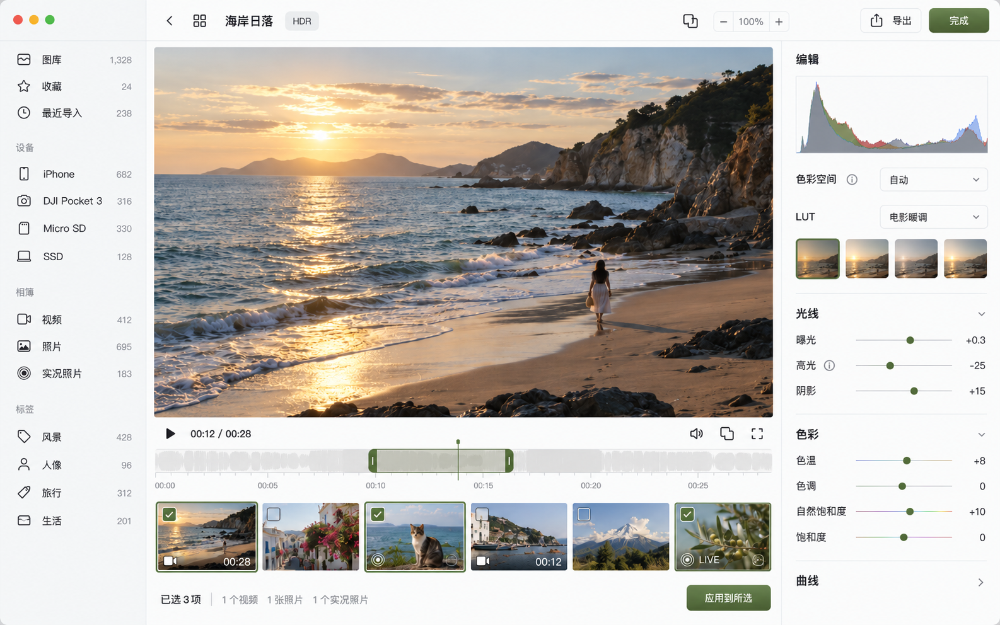
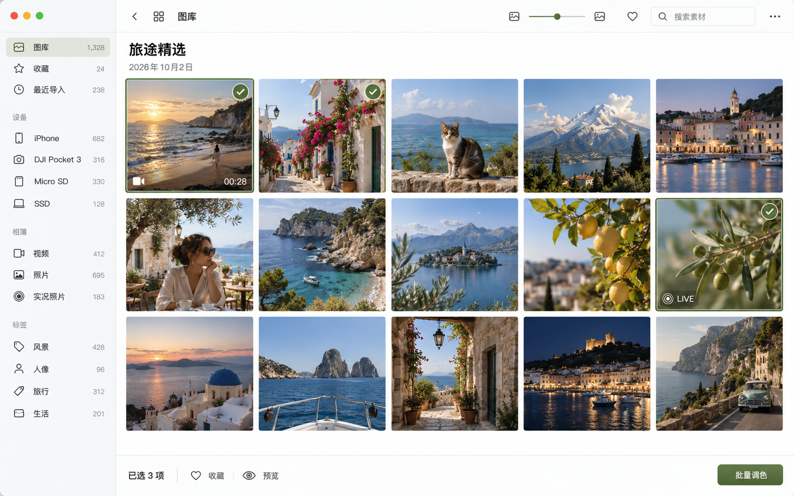

SELECTED DIRECTION / 01 · 2026.10.02
轻松选片，安静编辑。
沿用第 1 版的白色与橄榄绿。图库和选择参考苹果“照片”，编辑保留大画布与右侧调色区；学习内容从小小的 i 入口展开。


交互收得更简单。
按需了解
取消常驻的“为什么要做色彩还原”等说明。悬停给一句提示，点击展开术语、适用条件与当前参数解释。
示例：高光主要影响画面较亮的区域。具体结果取决于源素材与当前配方；试调后可按住对比图标查看原片。
原片对比
取消“原片 / 调色”文字开关。按住图标或 M 显示原片，松开回到当前效果；无障碍标签与悬停提示保留。
浏览与选择
双击打开单项预览，Space 快速预览，Command 多选、Shift 连续选择。视频与 Live 标识轻量展示；批量调色只同步勾选参数。
对比的按住 / 松开行为参考 Apple“照片”编辑基础。网格、多选和参数保存规则是本应用的设计建议；图标为概念示意。
保存参数版本，导出成品文件。
建议采用非破坏编辑：原件保留，调色和裁切保存成配方；版本历史像 Git 的检查点，但不需要把大图片、视频放进 Git，也不需要每次拖动都复制一份。
原始素材当前编辑配方完成：记录版本导出：生成新文件
| 操作 | 应用保存什么 | 磁盘上的媒体文件 |
|---|---|---|
| 调节滑块 | 即时预览；自动保存草稿，支持撤销 / 重做。拖动结束记录一次操作，重启可恢复草稿。 | 原件不变；预览与缩略图作为可清理缓存。 |
| 完成 | 以当前配方建立版本检查点，设为当前版本；无变更时不创建重复版本。 | 不生成新媒体；返回浏览时显示当前编辑效果。 |
| 保留另一版 | 新增命名配方，例如“自然”“暖调电影”，可切换与比较。 | 共用同一原件，不重复复制大文件。 |
| 恢复原片 | 创建无调整版本并切换到它；以前的调色版本仍可找回。 | 原件本来就保留，不需要覆盖写回。 |
| 应用到所选 | 保存每项应用前后版本与同一批次编号；未勾选参数保持各自原值。 | 先更新配方和预览，按需再批量导出。 |
| 导出 / 另存 | 固定要导出的配方版本、格式与输出位置。后续继续编辑不改变这次导出的任务。 | 新建 JPEG / HEIC、视频或 Live 资源对；需要完整原件才能渲染。 |
Live 图作为一个逻辑素材保存版本，照片与动态视频共用调色配方。导出时生成匹配的一对资源；不能只保存静态封面就声称完成了 Live 调色。
本地 SQLite 保存 Asset、RecipeRevision、EditBatch 和 ExportJob 的关系；配方包含曝光、白平衡、LUT / 强度、色彩处理、裁切、视频区间及封面时间。LUT 文件保存在应用管理的目录，并记录内容哈希、配方结构与渲染器版本，避免用户替换同名 LUT 后旧配方悄悄变化。
批次撤回逐项检查当前版本：仍停留在本批次结果的素材可以直接还原；已有后续编辑的素材由用户选择版本，避免覆盖新操作。相同内容的多个来源路径共用素材版本；转码或裁切后的不同原件保留各自身份。历史不代替原件备份，设备离线且没有完整工作副本时，可查历史与缓存，完整导出等待来源可用。